「極量」關注背後的安全問題
在許多社交媒體的帖文中，不少博主將麥理浩徑稱為“逃離城市喧囂”的理想地，卻很少提及路線的實際難度和潛在風險。
社交媒體上流傳最廣的一條「精華路線」，通常為：
萬宜水庫東壩 → 破邊洲 → 返回東壩 → 浪茄灣 → 返回東壩
根據多個行山攻略與路線數據整理，這條路線全程約 9至10公里，累計爬升約 450 至 750 米。若連同延伸至第二段部分路段，整體行程甚至可達 15公里以上，需時約 6至10小時不等。其中，破邊洲支線雖然距離不長（來回約2公里），但沿途為臨海岩石地形，部分路段接近懸崖，需時約 1至2小時。
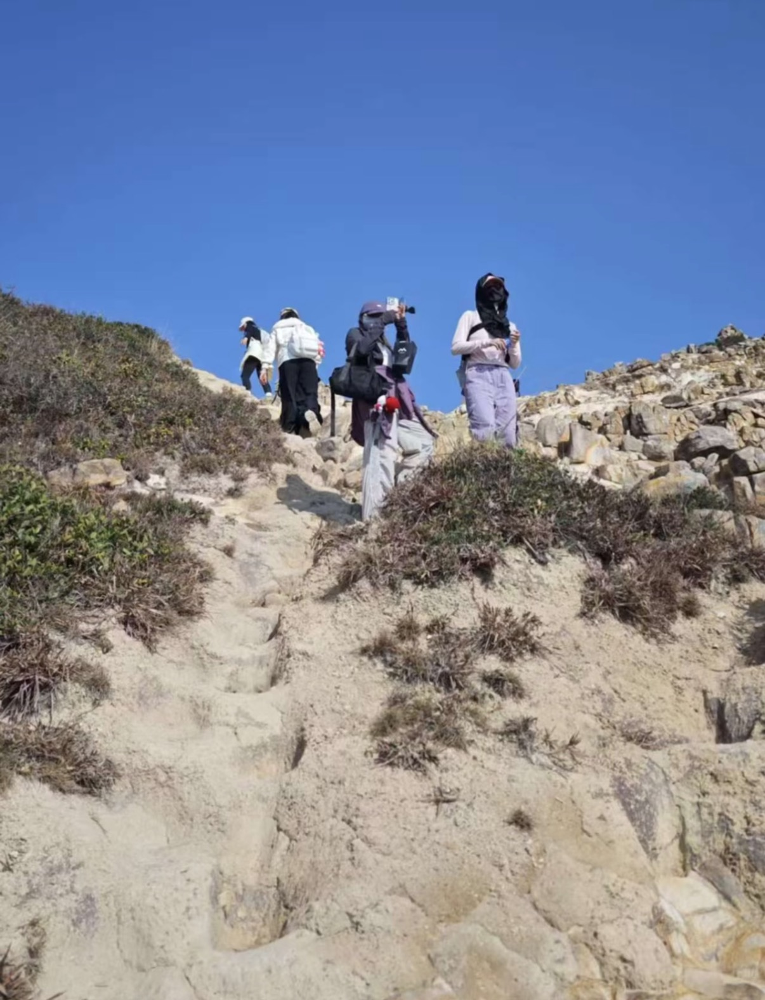
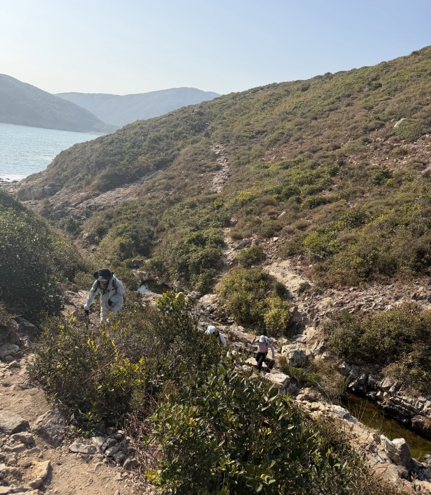
破邊洲路段的土路照片。圖片來源：小紅書網友提供。
不少遊客因為對自己體力認知的錯位以及打卡的熱情，直升機救援成了代價。
- 事故頻發：
- 2026年4月19日 一名內地男子在從萬宜水庫東壩徒步至浪茄灣途中中暑暈倒，被直升機救起送院治療。
- 2026年4月12日 一名30歲左右的女子疑因行山中暑暈倒，需直升機救起送院救治。
- 2026年3月30日 一名21歲女子與17歲胞妹由西貢東壩出發，中暑後一度昏迷不醒，需要直升機救起送院。
- 2025年12月31日 一名21歲內地大學生為了「出片」，在破邊洲照相時不慎踩空，從懸崖墜落，當場身亡。
2025年12月31日，一名21歲內地大學生從懸崖墜落，直升機到場救援。Zhang Ziqi/摄。
2026年4月19日，一男子在從萬宜水庫東壩徒步至浪茄灣途中被直升機救起送院治療。目擊者稱其是內地人，穿著Vans板鞋，疑似中暑，並向沿途旅客詢問是否有「藿香正氣水」。莫竣予/攝
針對上述情況，根據香港01報導，漁護署已在破邊洲觀景台加裝額外圍欄，並於五一假期期間使用具備廣播功能的無人機在上空監察，提醒遊客切勿跨過圍欄。
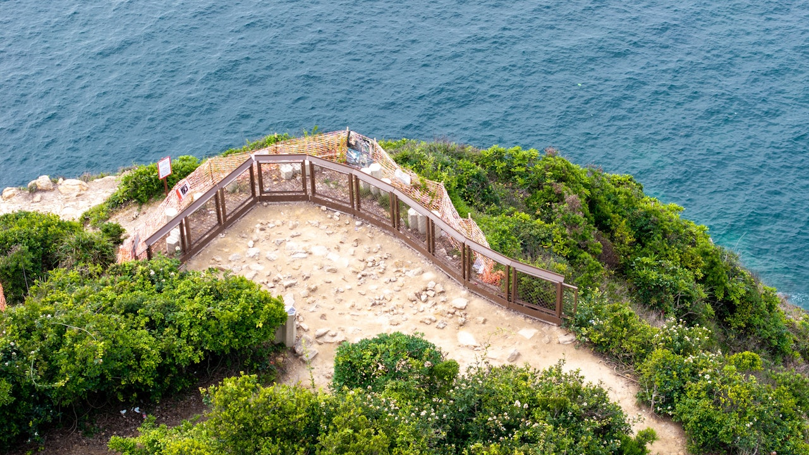
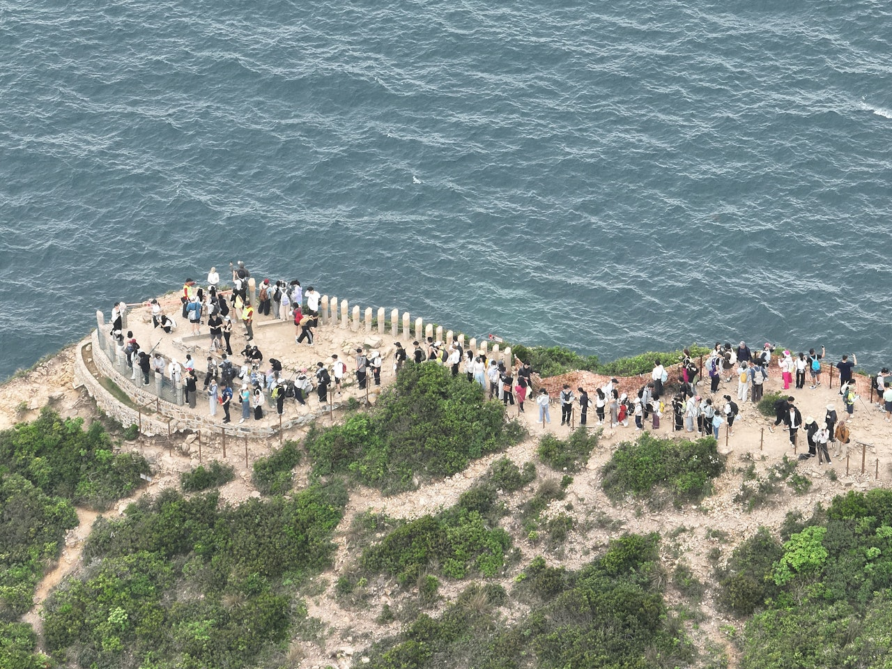
漁護署在破邊洲觀景台加裝額外圍欄。
自然生態保護
（1）環境保護
2026年4月19日，記者到訪浪茄灣營地時發現，沙灘上可見多處被丟棄的食物包裝，其中部分包裝印有簡體字。諷刺的是，距離這些垃圾不遠處，現場便設有大型垃圾桶。一名從破邊洲方向步行至浪茄灣的內地遊客向記者表示，破邊洲一帶的垃圾情況更為嚴重：「破邊洲上面的垃圾比這裡多多了。」

浪茄灣營地的垃圾桶。於夏涵/攝
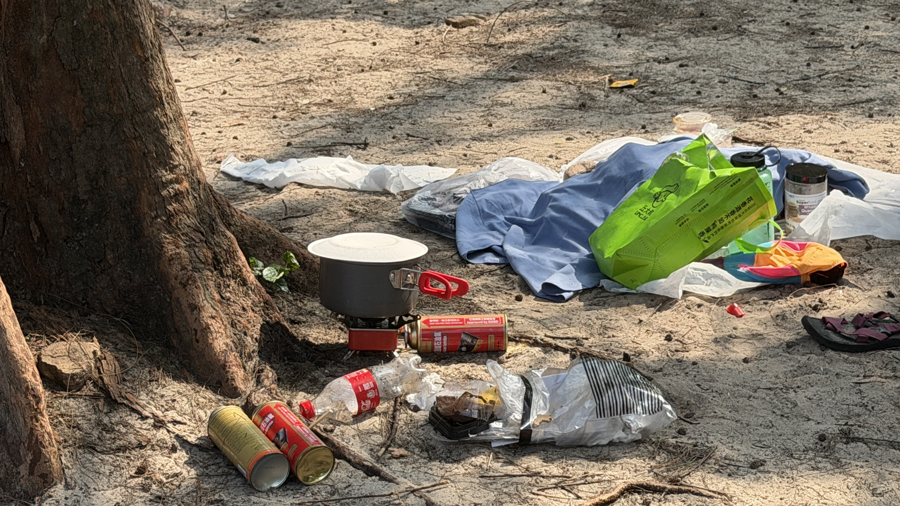
浪茄灣營地隨處可見的垃圾。於夏涵/攝
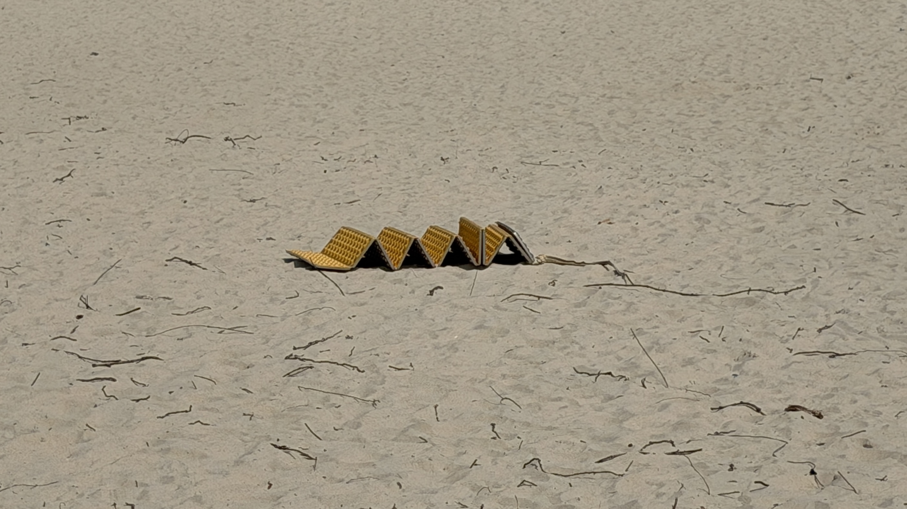
沙灘上被丟棄的蛋巢墊。於夏涵/攝
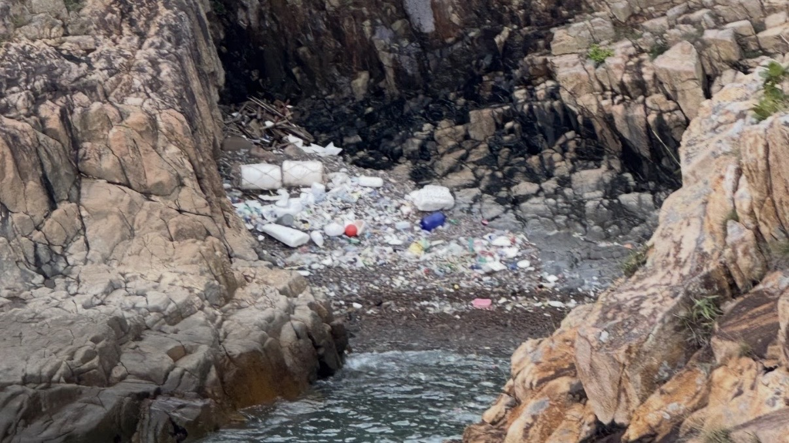
破邊洲段的垃圾情況。於夏涵/攝
據香港01報導，漁護署數據顯示今年復活節及清明節一連5日長假期期間，署方於西貢東郊野公園（包括東壩及熱門露營地點）共作出18宗涉及亂拋垃圾和非法露營的執法個案，並發出418次口頭勸喻。據星島頭條、香港01等多家媒體報導，漁護署義工隊聯同商界多次發起清理行動，撿拾的垃圾包括即棄餐具、膠樽、甚至露營煮食後的殘渣。
（2）樹木破壞
社交媒體帶來的影響，正在改變郊野公園中的遊客行為模式。近期，小紅書上興起「抱樹打卡」潮流，不少遊客在麥理浩徑攀爬樹木拍照，甚至模仿明星專輯封面姿勢（陳奕迅），在平台上分享並標記相關話題。
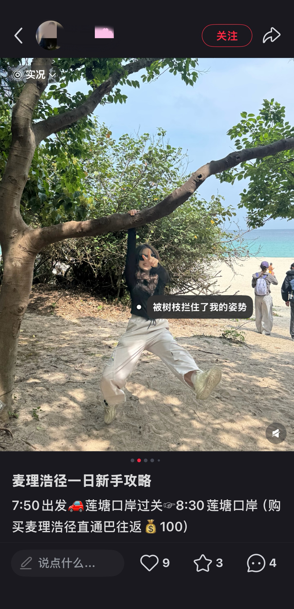
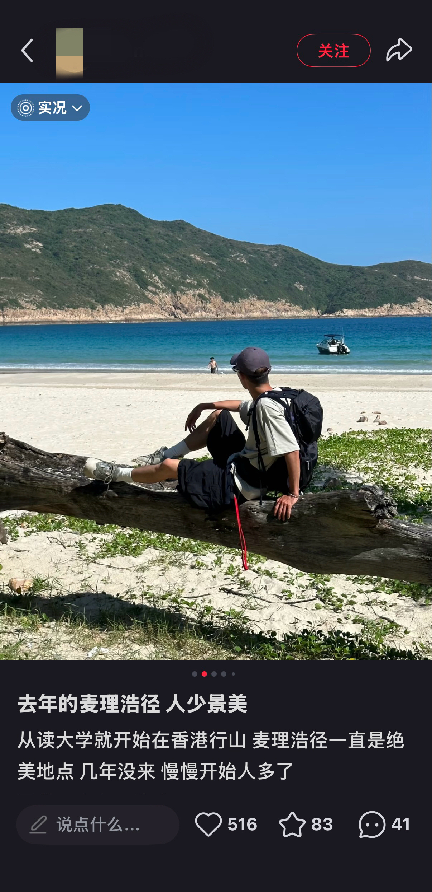
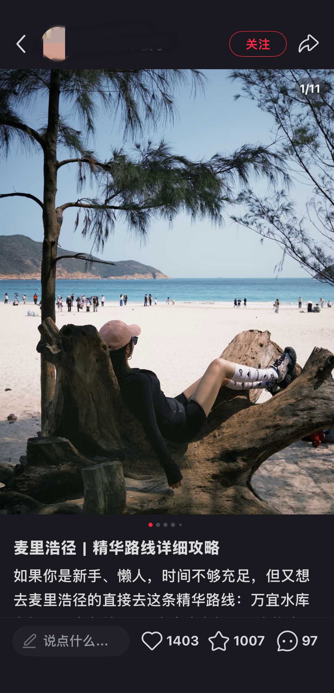
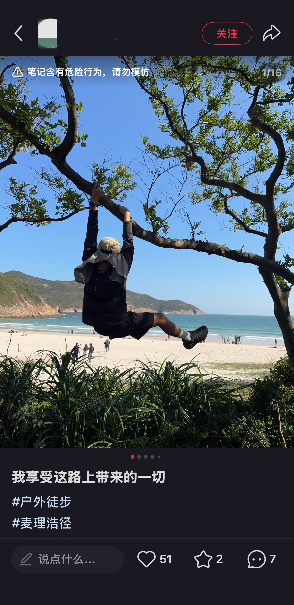
小紅書上關於抱樹拍照的熱門貼文。
2026年4月19日，記者在麥理浩徑浪茄灣營地觀察到，幾乎所有的「網紅樹」後方都排滿了長隊。據現場排隊的遊客表示，大約需要排隊 10 分鐘左右才能輪到拍照。

遊客在浪茄灣營地排隊「打卡」。於夏涵/攝
然而，這類行為已對自然環境造成直接影響。由於樹木難以承受反覆的人體重量，部分樹枝已出現明顯下垂甚至結構性損壞。儘管相關部門已在現場設置危險警告及圍封措施，仍有遊客無視提示繼續攀爬。
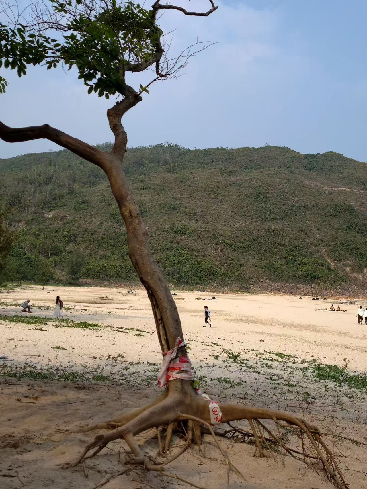
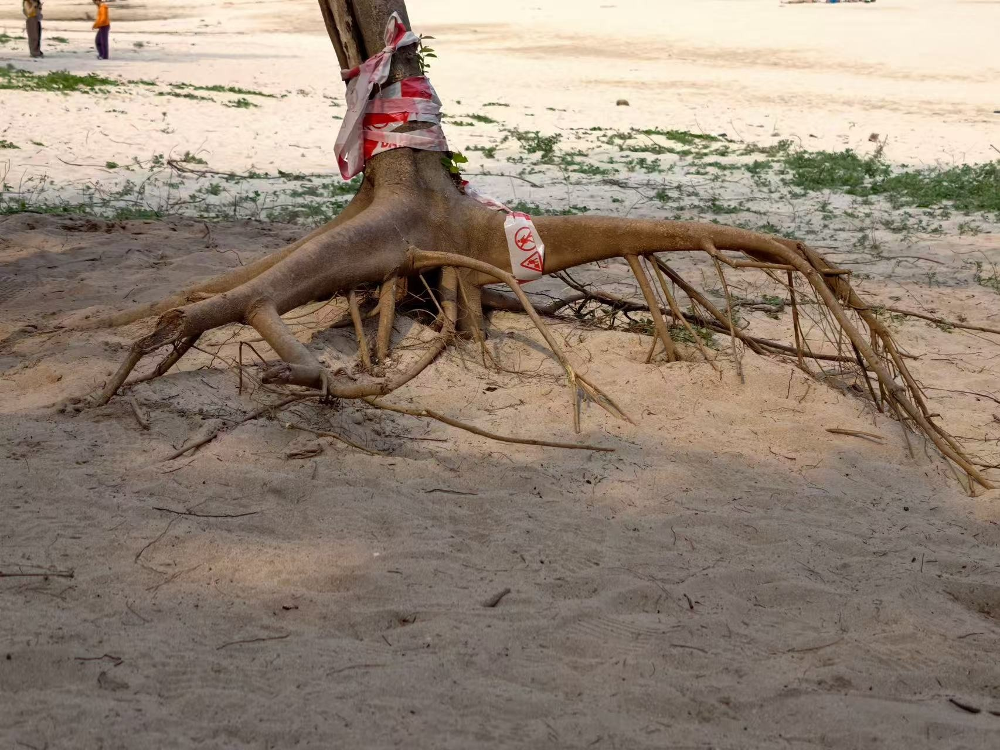
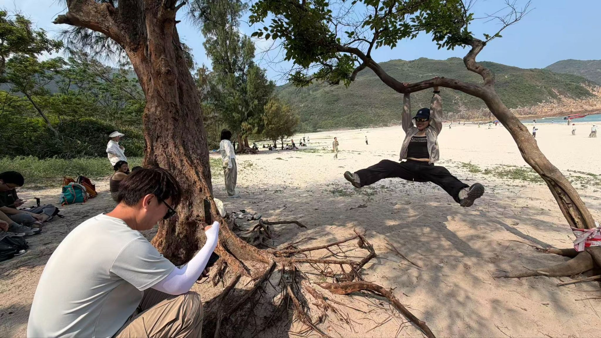
樹木因難以承受反覆攀爬的重量而出現損壞。
圖片來源：小紅書網友提供
漁護署回覆記者查詢時表示，根據《林區及郊區條例》（第96章），任何人無合法權限或辯解而砍伐、切割、焚燒或以其他方式摧毀樹木，即屬違法，一經定罪，可被處最高罰款 25,000 元及監禁一年。
漁護署亦呼籲遊人切勿攀爬樹木，以免發生意外或對樹木造成破壞。署方強調，會因應西貢東郊野公園訪客增加的情況，按實際需要加強熱門地點（包括浪茄灣一帶）的巡查、宣傳教育和執法工作。
（3）野豬問題
隨著遊客數量上升，野生動物的行為也正在被悄然改變。野豬原本依賴自然環境覓食，但在人流密集的山徑附近，垃圾與人為餵食提供了穩定且高能量的食物來源，使其逐漸依賴人類。
漁護署指出，頻繁接觸人類會令野豬失去對人的畏懼，甚至主動接近甚至搶奪食物，行為變得更具攻擊性。在額外食物供給下，野豬數量亦可能出現非自然增長，進一步打破生態平衡。當“野生動物”逐漸習慣人類存在，原本清晰的生態邊界開始模糊，與野豬之間的關係也從“偶然相遇”，轉變為“持續接觸甚至衝突”。
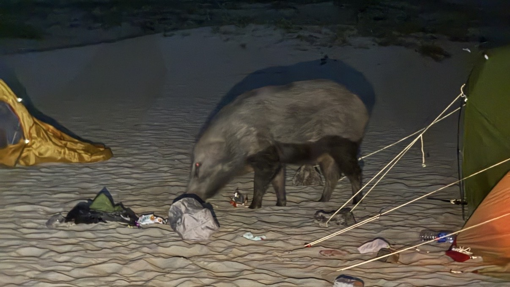
在麥理浩徑遇到野豬的照片。圖片來源：小紅書網友分享
（4）珊瑚問題
隨著麥理浩徑走紅，游客活動範圍逐漸從山徑延伸至西貢海岸，對海洋生態的影響亦開始浮現。有環保組織發現，在熱門地點如橋咀洲及大浪灣一帶，游客下水活動中出現踐踏珊瑚、挖掘海洋生物等行為。
珊瑚屬於極為脆弱的生態系統，生長往往需要數十年，但一次踩踏即可造成不可逆破壞。當大量游客在同一地點反復進入海域，這種影響會被迅速放大。更重要的是，珊瑚不僅是景觀，更是海洋生態的基礎，其受損將影響魚類及其他海洋生物的棲息環境。
場地運營與設施壓力
（1）公共設施
二段目前廁所很少，使用女廁通常需要更長的等待時間。
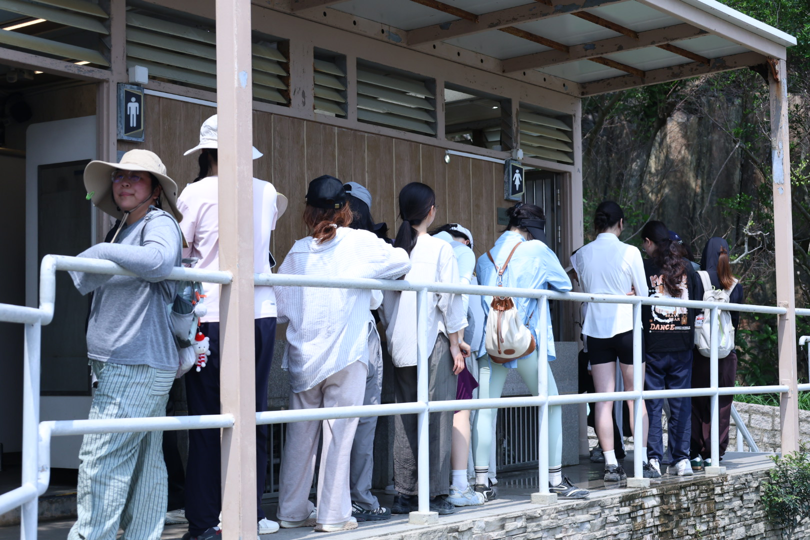
4月19日麥理浩徑二段排隊情況。於夏涵/攝
（2）補水站匱乏
麥理浩徑二段整段約13.5公里，目前僅北潭凹處有1個官方水站。
（3）營地爆滿問題
根據漁護署資料，咸田灣及西灣營地屬於大型露營地，建議可容納超過 50 個營位。現時除了荃錦營地需要預約外，其他所有指定露營地點都是按「先到先得」原則供訪客使用，所以漁護署沒有備存相關營地的最高帳篷數目及最高留宿人數等資料。
以 2026 年農曆新年正月初二數據舉例，當日咸田灣營地有 450 頂帳篷，西灣營地有 135 頂帳篷。2026 年 5 月 1 日，西貢浪茄灣營地、西灣營地同鹹田灣營地昨日更是合計約有 1100 個帳篷，遠超場地負荷。
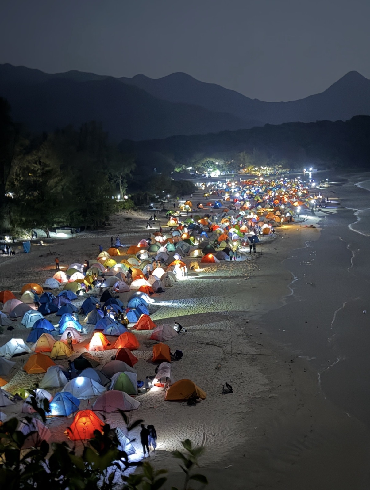
節假日期間，營地被密集的帳篷填滿。
圖片來源：小紅書網友分享
咸田灣營地超載可視化
向下滾動，查看 400 頂額外帳篷如何填滿營地
官方建議容量
50
額外湧入帳篷
0
目前可視化總數
50
藍色＝官方建議容量；紅色＝額外湧入帳篷
官方建議容量下，50個營位可較平均分布在營地內。
措施以及成效：去年成為垃圾及非法露營重災區的西灣營地，今年五一假期成為漁護署重點關注區域之一。據報導稱傍晚前目測大約30多個帳篷，數目較去年近100個大減三分之二，並全部均在指定營區駐紮。
漁護署人員一見有人紮營，先上前遞出宣傳牌進行重點教育，教授營地使用、爐具用火、洗滌煲具及廁所使用守則，提醒儘量降低聲浪及切勿破壞郊野環境，大型生火煮食將不被允許。而靠近西灣士多的非營區沙灘，去年有多達近百個紮營形成極其誇張的帳篷海，今年則被漁護署人員嚴防死守，但凡有人放地席或打營釘，即被告知上址為非法營區，有機會被檢控或罰款，保持非營區「零營淨灘」。
（4）交通運輸壓力
每逢節假日，萬宜水庫東壩便會被湧入的出租車擠滿。尤其在傍晚遊客離開的高峰期，候車時間極長，龐大的交通運輸需求為當地帶來沉重壓力：
出租車司機許先生：
「上午 8 時至 9 時為用車高峰期，乘客群體以內地遊客為主。受限於山區路況狹窄，該時段經常伴隨嚴重的交通阻塞。」
9A路線專職小巴司機：
「我們只有週末和公眾假期才開。從去年開始人變特別多，尤其是星期六。人多的時候一天大概跑 13 趟，幾乎班班客滿。現場必須仰賴漁護署的工作人員，協助引導龐大的遊客排隊上下車，才能勉強維持基本運作。」
駐守警察：
「交通亂象主要集中在週末與節假日。警方需加派多輛警車在現場維持秩序，首要任務是防止『黑車（非法載客）』趁機宰客。」

從「開放山徑」到「預約管理」：麥理浩徑的下一步
麥理浩徑面對的並不是一個孤立問題。世界多地的自然景點在社交媒體推動下，都經歷過相似的轉變：原本屬於登山者、遠足者或本地使用者的山徑，在短時間內被大量遊客湧入，公共安全、環境保護和管理資源隨之受壓。富士山正是其中一個可以參考的案例。
日本富士山的經驗
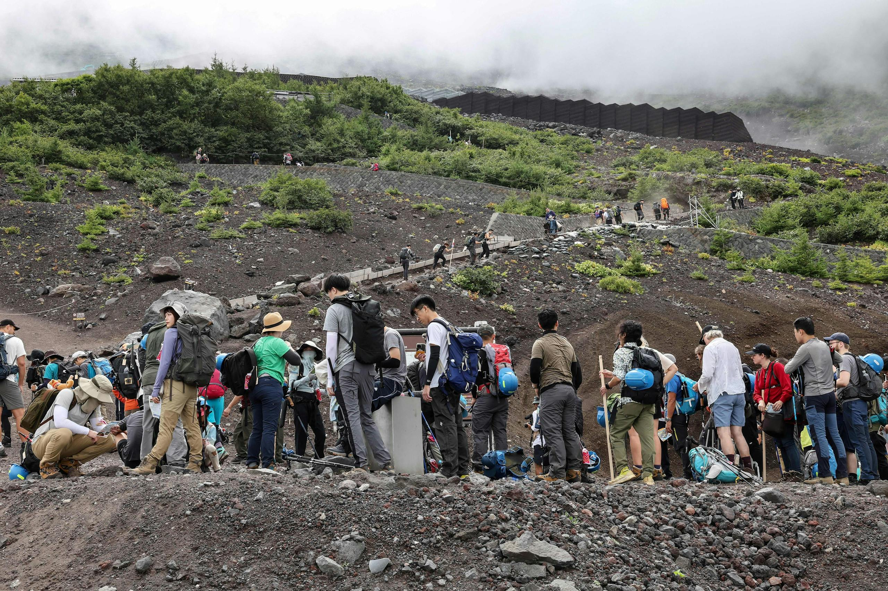
大批登山客聚集在富士山岩坡上排隊。GettyImages
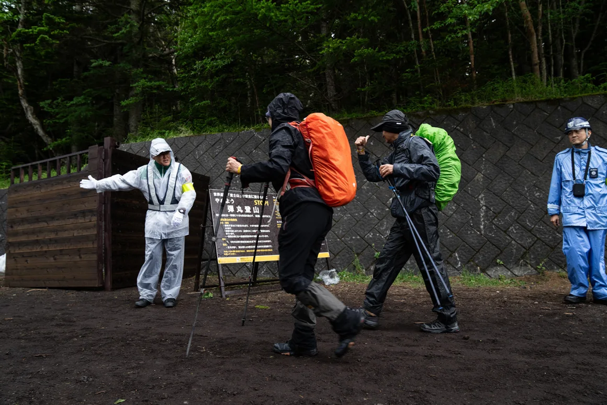
工作人員檢查登山客的「登山費」腕帶。Xinhua/Getty Images
-
問題：彈丸登山
「彈丸登山」指的是晚上出發直接行至山頂，看完日出後下山，不在山上小屋過夜休息。這種方式風險大，易因睡眠不足或未適應海拔而引發高山症和失溫。
-
措施：收費與名額限制
山梨縣政府於吉田線五合目設置閘門，除預約住宿者外，每日限額4000人。登山者須支付2000日圓（約100港元）取得通行手環。2025年起，登山費更將調升至4000日圓，閘門關閉時間提前。
-
成效與文化
據報導，靜岡縣側達成3年來首次夏季登山季零死亡。此外，當地長期深耕「Leave No Trace」文化，廣泛設置環保廁所，減少對環境的污染。
-
官員呼籲
山梨縣官員指出「富士山正痛苦地尖叫著」，建議建設輕軌解決交通問題；富士宮市市長則推動建立「搜救費用個人負擔制」，以產生實質阻嚇作用。
香港麥理浩徑
-
數據
根據立法會數據顯示，2025年全港郊野亂拋垃圾檢控大增3.4倍（共42宗），非法露營達116宗，西貢東為重災區。
-
現行措施：科技執法
五一長假期間，漁護署動用具廣播功能的無人機監察防跨欄，並以 CCTV 監控營地；據香港01報導，復活清明期間共發出 418 次勸喻及 18 宗檢控。
-
未來長遠政策與倡議
香港的麥理浩徑目前尚未設有固定人流上限，亦未有全面預約制度。但漁護署回覆記者查詢時表示，為有效管理郊遊熱點人流，署方會參考以往長假期經驗，檢討郊野地點及營地的長遠管理策略，包括研究引入預約和收費制度。
漁護署指出，相關研究會考慮不同場地狀況，包括生態保護、訪客安全、進出管理及實際操作等細節；目前仍在探討預約程序、收費方式、是否採用實名制、執行安排、所需設施及宣傳計劃。
與此同時，漁護署亦表示，其「香港郊野及海岸公園」小紅書帳號預計今年年中啟用，內容將介紹香港自然風光和郊遊路線，同時推廣遠足安全、郊遊禮儀及愛護自然等資訊。換言之，政府部門正嘗試在社交媒體平台上介入這場流量傳播：不只是讓山徑被看見，也希望讓風險、規則和保育訊息一同被看見。
被算法放大的山徑
抖音上的熱度攀升現象同樣顯著。2026年3月至4月28日，「麥理浩徑」話題的日均熱度指數達到5.1萬，較2023年同期增長近220倍。
漁護署在回應記者有關社交媒體熱度與麥理浩徑人流量關係的查詢中表示：「留意到近年社交媒體上有關香港行山路線的討論持續增加，當中麥理浩徑是最受關注的路線之一。」
漁護署亦指出，他們一直密切「監察社交媒體動態」，以作為「評估人流走向、識別潛在風險及調配資源」的參考。其亦計劃於今年年中開設官方小紅書帳號，在介紹香港自然風光與郊遊路線的同時，發布行山安全、遠足禮儀與愛護自然等相關內容。